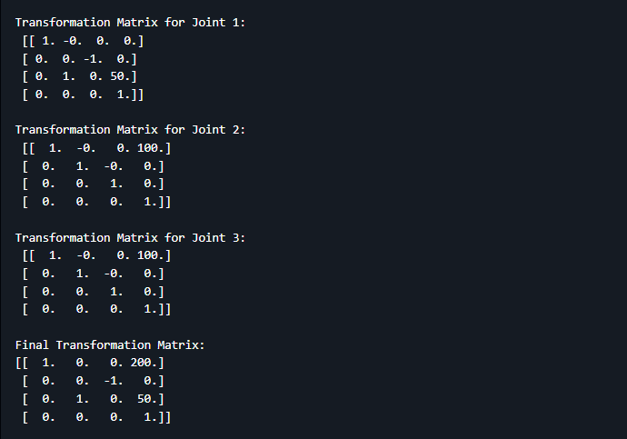

Kinematics for Robots
Description
In robotics, Denavit-Hartenberg parameters are used to describe the position and orientation of a robot's links and joints. The transformation matrix for each joint is calculated using the following DH parameters:
The code allows you to input these parameters for each joint and computes the transformation matrices step-by-step. After calculating the transformation matrices for each joint, the final transformation matrix from the base to the end effector is displayed.
Github

Kinematics for Robots
This project involves calculating the transformation matrices for a robotic arm using Denavit-Hartenberg (DH) parameters. The code takes input from you for the DH parameters of each joint and calculates the individual transformation matrices, as well as the final transformation matrix that represents the overall transformation from the base to the end effector.